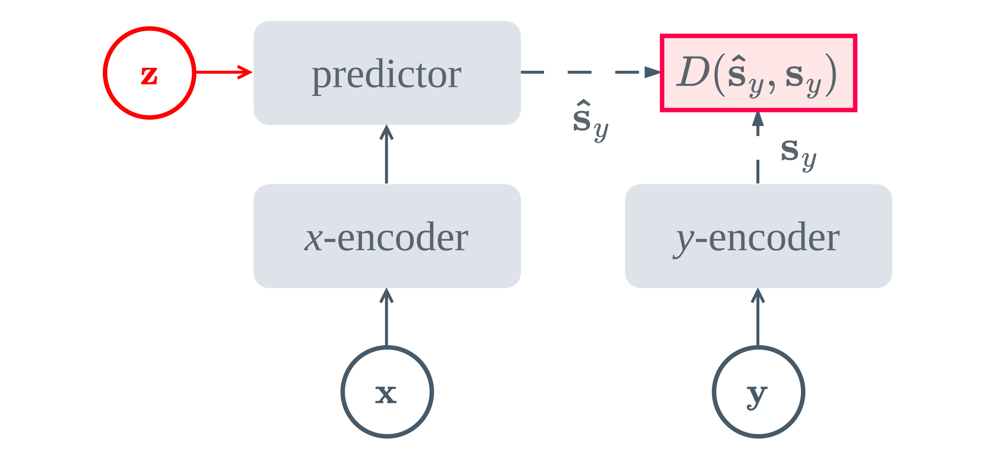
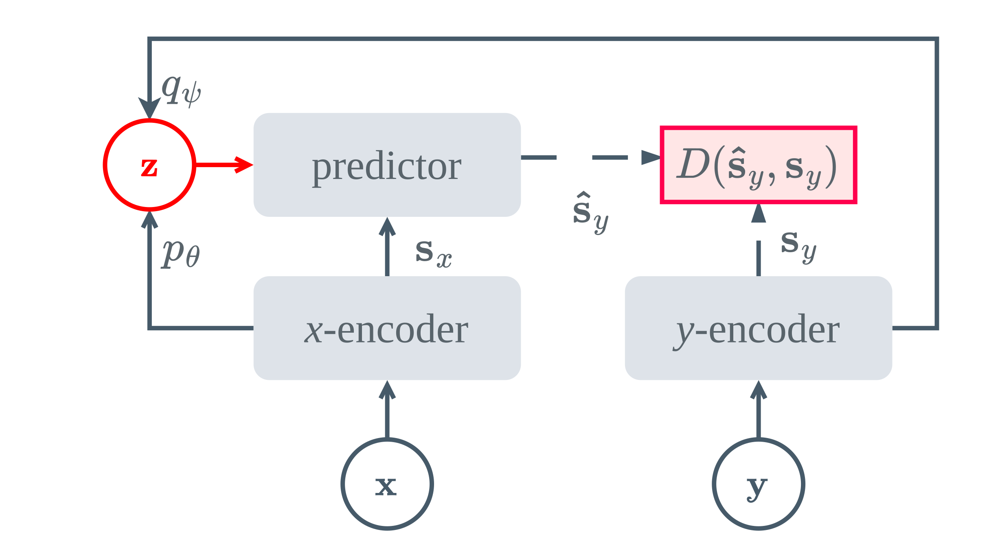
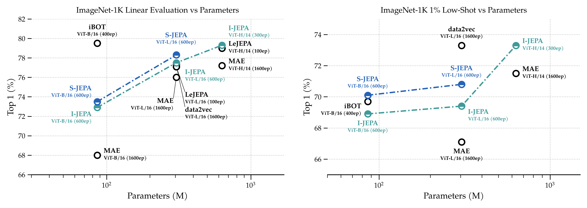

Overview
TL;DR
S-JEPA replaces the deterministic auxiliary token \(z\) in JEPAs with a proper stochastic latent variable, trained as a CVAE entirely in representation space, with no decoders and no reconstruction. The result: stronger representations than I-JEPA under matched architectures and schedules, plus error-correlated predictive uncertainty and diverse completions, capabilities no deterministic JEPA predictor has.
Abstract
Joint-Embedding Predictive Architectures (JEPAs) predict the latent embedding of a target signal from a context signal, with an auxiliary variable \(z\) conditioning the predictor. Despite its prominent role in the original JEPA blueprint, the content of \(z\) has been carried by a fixed deterministic token in every prior instantiation, collapsing the genuinely multi-modal distribution over plausible completions to a point estimate. We present S-JEPA, which realises \(z\) as a proper stochastic latent variable for masked image prediction: a learned posterior infers \(z\) from context and target during training, while a learned context-conditioned prior approximates the distribution of plausible completions at inference, with no decoders and no reconstruction. In its deterministic limit the objective reduces to the I-JEPA loss in functional form, generalising that objective rather than strictly containing the I-JEPA model. Our central finding is that stochasticity adds capabilities, error-correlated predictive uncertainty and diverse completions, at no cost to representation quality: under matched architectures and schedules S-JEPA improves over the deterministic I-JEPA baseline and exceeds LeJEPA at matched architecture, while additionally producing spatially structured uncertainty maps and semantically diverse completions, neither of which the deterministic predictor produces.

\(z\) is a fixed, deterministic token

variable with a learned prior and posterior
Motivation
Why should prediction be stochastic?
A JEPA comprises a context encoder \(f_x\), a target encoder \(f_y\), and a predictor \(g\) that estimates \(\hat{s}_y = g(s_x, z)\) from the context representation \(s_x = f_x(x)\) and an auxiliary variable \(z\). In LeCun's original blueprint, \(z\) is meant to carry the residual information the context lacks: scene-level factors, global style, or the semantic content of a masked region. Yet in every instantiation to date, from I-JEPA's shared learnable mask token to V-JEPA's spatiotemporal analogue, \(z\) is deterministic. Stochasticity has only ever entered the positional component (where to mask), never the content of what is masked.
Representation ≠ prediction
Contrastive and self-distillation objectives learn useful embeddings by matching views, but a good embedding does not by itself say what is missing, or what could plausibly come next.
Prediction asks a new question
Given what we observe, what other states could be consistent with it? Answering this requires a genuine distribution over completions, not a single point estimate.
Toward world models
Inferring missing information under ambiguity is a prerequisite for predicting plausible futures and, eventually, conditioning predictions on actions for planning and control.
Our approach
We realise \(z\) as a proper stochastic latent variable over the content of the masked region, replacing the deterministic predictor with one built on a Conditional Variational Autoencoder (CVAE) operating entirely in representation space, i.e., with no pixel decoder and no reconstruction loss. A learned posterior infers \(z\) from context and target during training; a learned context-conditioned prior anticipates plausible completions from context alone and is used at inference.
Method
From a deterministic predictor to a CVAE in representation space
The I-JEPA objective
A JEPA computes \(s_x = f_x(x)\), \(s_y = f_y(y)\), and \(\hat{s}_y = g(s_x, z)\), and is trained to regress the target representation under a stop-gradient on the (EMA) target encoder:
Here \(z\) is a fixed, learnable mask token, i.e., the same value regardless of what the masked region actually contains.
A latent-variable model over target representations
We instead model the conditional distribution \(p(s_y \mid s_x)\) directly. We introduce \(z \in \mathbb{R}^{d_z}\) as a per-image latent variable that accounts for residual uncertainty, i.e., occlusion, texture variability, and semantic ambiguity, giving the joint and marginal:
The marginal is intractable for a neural predictor \(g_\phi\), so we maximise a variational lower bound instead of computing it directly.
Context-conditioned prior & approximate posterior
The prior sees the context \(s_x\) only, and must learn to anticipate plausible completions without the target. The posterior additionally sees the target \(s_y\) during training, inferring the \(z\) that best explains it. Both are diagonal Gaussians:
At inference the target \(s_y\) is unavailable, so \(z\) is drawn from the prior \(p_\theta(z\mid s_x)\). The prior is therefore driven to match the aggregate posterior across the training set.
Evidence lower bound
Introducing the posterior and applying Jensen's inequality to the concave log yields the CVAE ELBO, in representation space:
Tight iff \(q_\psi\) equals the true posterior \(p(z \mid s_x, s_y)\). The first term drives accurate prediction; the second prevents the posterior from encoding target information inaccessible at inference.
Gaussian likelihood ⇒ squared error
Assuming a fixed-variance isotropic Gaussian likelihood around the predictor's output, the expected log-likelihood reduces in closed form to a scaled MSE:
Sampling uses the reparameterisation trick: \(z = \mu_\psi + \sigma_\psi \odot \epsilon\), \(\epsilon \sim \mathcal{N}(0, I)\), enabling end-to-end gradient flow through the stochastic node.
The S-JEPA objective
Absorbing the constant \(1/(2\sigma^2)\) into a free hyperparameter \(\beta > 0\) that controls the information bottleneck on \(z\) gives the final training objective:
When \(z\) is collapsed to a deterministic, target-independent code, \(\mathcal{L}_{\text{total}}\) reduces to the I-JEPA loss in functional form, so S-JEPA generalises the objective rather than strictly containing the I-JEPA model, since \(\mu_\psi\) remains target-dependent where the I-JEPA mask token is not.
What this enables at inference
Encoder features
Use \(s_x\) directly for downstream tasks, i.e., linear probing and low-shot transfer, exactly as with a deterministic JEPA.
Alternative completions
Reuse the context features and draw a fresh \(z \sim p_\theta(z\mid s_x)\) to obtain a different, equally plausible target prediction.
Uncertainty maps
Measure the variance across many sampled target predictions, which is zero by construction for a deterministic predictor but informative here.
Results
Stronger representations, at matched compute
Under matched architectures and training schedules, S-JEPA improves over the deterministic I-JEPA baseline on linear evaluation and low-shot ImageNet-1K, and exceeds LeJEPA at matched architecture on a longer schedule, all with only \(1.01\times\) the parameters of I-JEPA and negligible overhead in FLOPs and inference latency.

S-JEPA (blue) consistently sits above the I-JEPA / LeJEPA frontier (teal) at matched parameter count, on both linear evaluation (left) and 1% low-shot transfer (right) on ImageNet-1K. At ViT-L/16 (600 epochs), S-JEPA reaches 78.3% linear top-1, above I-JEPA (77.5%) and data2vec (77.3%, 1600 epochs); at ViT-B/16, S-JEPA reaches 73.5%, above I-JEPA (72.9%) and MAE (68.0%, 1600 epochs).
Representation structure
PCA projections of encoder features
We project block-4 patch representations onto their first three principal components (foreground-masked, mapped to RGB) across three ViT-B/16 encoders trained with different objectives. No localisation signal supervises this map, so the structure emerges purely from the pretraining objective. Select an example:
All three methods recover coherent object/background structure, with S-JEPA exhibiting particularly clear object boundaries and spatially consistent representations, suggesting that stochastic prediction preserves, and potentially sharpens, the semantic structure of the learned features.
Predictive uncertainty
Error-correlated uncertainty maps
For S-JEPA we draw \(N=50\) samples \(z \sim p_\theta(z\mid s_x)\) from the full-image context and compute the predictive variance \(U_p\) across the resulting target predictions. I-JEPA's deterministic predictor gives \(U_p = 0\) everywhere by construction, so its column below carries no information about the image, reflecting only the colour-map normalisation. S-JEPA's uncertainty, by contrast, consistently concentrates on the animal or object rather than the background, and correlates with where its own mean prediction actually errs. Select an example:
Diverse completions
Sampling the masked region
Each example shows a masked input and five completions, each from a distinct draw \(z_i \sim p_\theta(z\mid s_x)\), decoded via a lightweight diffusion decoder (RCDM) trained on frozen S-JEPA predictor representations. Decoding uses a fixed noise seed across all five draws, so the pixel-level variation you see reflects only the sampled latent, not decoder-side stochasticity. Select an example:
Samples vary in object identity and configuration, reflecting genuine uncertainty over the masked region encoded in \(z\), a capability the deterministic I-JEPA predictor does not have, since it produces exactly one completion per context.
Conclusion
Stochasticity as a free capability
S-JEPA realises the auxiliary variable \(z\) in JEPAs as a stochastic latent over the content of the masked region, with a learned context-conditioned prior and no reconstruction. A CVAE operating purely in representation space replaces I-JEPA's deterministic predictor with a probabilistic model whose objective recovers the I-JEPA loss as a deterministic special case. Under matched architectures and schedules, S-JEPA improves over I-JEPA on linear probing, low-shot, and most transfer tasks, exceeds LeJEPA at matched architecture on a longer schedule, produces error-correlated uncertainty maps at negligible cost, and generates diverse completions.
Limitations
- scope\(z\) is a single per-image latent rather than a per-target-region one.
- scaleOur largest backbone is ViT-L/16; scaling to ViT-H/14 and beyond is untested.
Looking forward
Inferring missing information under ambiguity is a step toward predicting plausible futures with uncertainty, and, eventually, conditioning predictions on actions for planning and control, extending from masked images toward the kind of world model LeCun's original JEPA blueprint set out to motivate.
Citation
BibTeX
@misc{giakoumoglou2026sjepa,
title={{A Stochastic Latent Variable Generalization of Joint-Embedding Predictive Architectures}},
author={Nikos Giakoumoglou and Paschalis Giakoumoglou and Tania Stathaki},
year={2026},
eprint={2611.09302},
archivePrefix={arXiv},
primaryClass={cs.LG},
url={https://arxiv.org/abs/2611.09302},
}